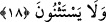

“Leyasrimunnehâ” fiilinin asıl kökü “sırâm”dır. Arapçada “sarm” kökü “hurmanın
meyvesini koparmak” anlamına gelmektedir. Aynı kökten “saramehû” fiili, “meyveyi
kopardı” demektir. Buna göre âyet-i kerîmenin mânâsı; onlar gerek üzüm, gerek hurma
olsun o bahçenin meyvelerini koparacaklarına, ekin ve benzeri şeylerin mahsûlünü
toplayacaklarına yemin ettiler, demek olur.
“Musbihîn” kelimesi; daha henüz gecenin karanlığı bâkî iken, erkenden, sabaha
girerlerken demektir. “leyasrimunne” fiili yukarıda geçen yeminin cevâbı olup ifâde,
arapların söyleyiş biçiminin aksine gelmiştir. Eğer arapların söyleme biçimine uygun
olarak gelseydi “nun” ile “lenasrimunne” yâni “bu bahçenin meyvelerini
toplayacağımıza” şeklinde olurdu. “Musbihîn” kelimesi “leyasrimunne” fiilinin
fâilinden hâldir.
18. Onlar istisnâ da etmiyorlardı.
Bir başka ifâdeyle onlar “inşâallah” demiyorlardı. “İnşâallah” ifâdesine, şart edâtı
olduğu hâlde, “istisnâ” isminin verilmesi, sağlamış olduğu anlamın istisnâ anlamı
olmasından dolayıdır. Çünkü insan; “inşâallah mutlaka çıkacağım” ve “çıkmayacağım
ancak inşâallah çıkacağım” dediğinde, dilbilgisi bakımından aynı anlamı ifâde etmiş
olur.
Yukardaki “lâ yestesnûn” cümlesi, müste’nefe yâni yeniden başlangıç cümlesidir veya
hâlden sonra ikinci hâldir. Onların, âyette yer almayan gizli bir fiil üzerine yemin
ettiklerinin ifâde edilmesi, maksadlarının mürüvvet erbâbı ve fütüvvet ashâbı nezdinde
çirkin olmasından dolayıdır. Onların mahrûmiyetlerine, bir sebeb yeterli olduğu hâlde
iki sebep gösterilmiştir. Bunlardan birincisi bu kişilerin, çirkin olan birşeyi yapmaya
yemin etmeleri, ikincisi de “inşâallah” dememeleridir. Burada “istisnânın terki”nin
onlardan hâl olarak getirilmesi ile, mahrûm olmalarında bu hareketlerinin ne kadar
güçlü ve ne kadar temel bir sebep olduğuna işâret olunmaktadır. Ağır basan ihtimale
göre âyet-i kerîmenin mânâsı şöyledir: “Onlar fakirlerin hisselerini istisnâ edip
ayırmıyorlardı.” Bir başka ifâdeyle, “onlar babalarının yaptığı gibi fakirlerin paylarını
kendi paylarından ayırıp çıkarmıyorlardı.”
Ebû Hayyân’ın tefsirine göre âyet-i kerîmenin mânâsı; “onlar fakirlere ürün
vermeyecekleri yolundaki kararlılıklarına istisnâ getirmiyorlardı” şeklindedir.
“İstisnâ” fiilini biraz açalım: Bu fiilin ana yapısı “bir şeyi iki kez tekrar etme” veya
“bir şeyi ardarda iki şey hâline getirme” ya da “bir şeyi birbirine aykırı ve zıt iki şey
hâline getirme” anlamlarına gelir. İstisnâ işlemi yapıldığında durum aynen böyledir.
Çünkü insan cümle içinde herhangi bir nesneyi istisnâ ettiği zaman onu bir kez toptan ve
bir kez de ayrıca zikretmiş olmaktadır. Örnek verelim: “Harace’n-nâsu: insanlar çıktı”
dediğimizde bu insanların içerisinde Zeyd ve Amr da mevcuddur. Bu cümlenin